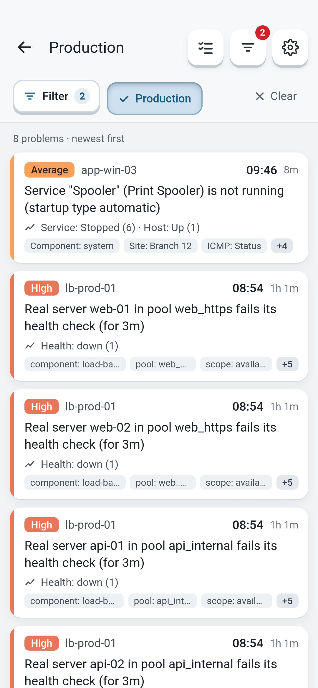
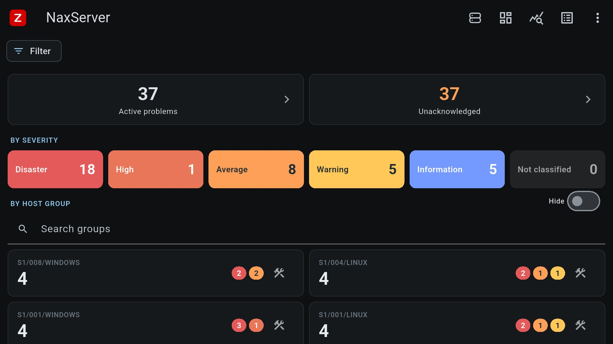
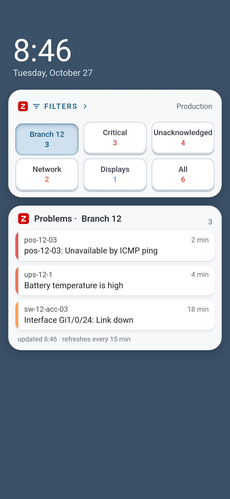

Tvůj monitoring
vždy po ruce.
Problémy v reálném čase, potvrzování událostí, dashboardy i mapa hostů. Přímo z tvého Zabbixu do telefonu, bez cloudu uprostřed.
Víš o problému dřív, než ti zavolají.
Živý přehled událostí s barvami podle závažnosti přesně jako ve webovém Zabbixu. Potvrdíš i zavřeš je přímo z telefonu, s komentářem.
- Push notifikace přes váš vlastní Firebase
- Filtry podle závažnosti, skupin a tagů, uložené jako sestavy
- Sdílení události do Teams jako přehledná karta

Tvoje dashboardy na telefonu i na zdi.
Zabbix dashboardy a widgety vykreslené nativně. Kiosk režim drží obrazovku zapnutou, takže z televize na chodbě uděláš nástěnný panel.
- Každému displeji vlastní dashboard přes MDM
- Geomapa hostů, grafy a poslední data
- Telefon, tablet, Android TV i hodinky

Kiosk režim · celoobrazovkový dashboard na televizi
Telefon připojený k Zabbixu za pár vteřin
Modul ZbxView connect přidá do Zabbixu „Připojení telefonu“. Nikdo nic nevypisuje ani neopisuje tokeny.
- 1Otevři Připojení telefonu v uživatelském nastavení Zabbixu.
- 2Naskenuj QR kód v aplikaci: Přidat server → Naskenovat.
- 3Hotovo. Každý telefon má vlastní API token, který nevyprší. Zařízení jde kdykoli přejmenovat nebo odebrat.
Stav Zabbixu přímo na ploše telefonu.
Widgety na plochu Androidu ve vzhledu aplikace, světlé i tmavé. Filtry si uložíte v aplikaci a na ploše mezi nimi přepínáte jedním klepnutím.
- Filtry, Problémy, Závažnosti a Rychlé akce – klepnutí na filtr přepne ostatní widgety
- Problém z widgetu se otevře rovnou v aplikaci
- Obnova i se zavřenou aplikací (5–60 min) a hned po push notifikaci

Widgety · Nastavení → Widgety určí filtry, zkratky a obnovu
Zabbix za Zero Trust bránou. Aplikace projde i tak.
Zabbix nemusí být vidět z internetu. Prohlížeč se přihlásí přes Google nebo Microsoft, aplikace ZbxView se bráně prokáže sama – service tokenem ve vlastních HTTP hlavičkách, nebo klientským certifikátem.
- Cloudflare Access: service token ve vlastních HTTP hlavičkách
- Klientský certifikát (mTLS), který dostanou jen servery, kterým patří
- Do telefonů QR kódem ze ZbxView connect nebo hromadně přes MDM
Zero Trust · Zabbix není vidět z internetu, aplikace ano
Novinky
Co je ve ZbxView nového.
iPhone, iPad a Apple Watch
- Aplikace pro iOSOdeslaná ke schválení do App Store, brzy ke stažení.
- Widgety na plošeProblémy a pohotovosti i na iPhonu.
- Apple WatchPřehled a potvrzení problémů na hodinkách.
ZbxView Pro jako předplatné
- Měsíčně nebo ročněRoční tarif má prvních 30 dní zdarma.
- Nebo jednou navždyKdo dřív koupil odebrání reklam, má Pro navždy.
- Widgety a hodinky v ProVšichni je mají 30 dní zdarma, pak jsou součástí Pro.
Připojení telefonu 1.10
- Přejmenování zařízeníTužkou u telefonu v Připojení telefonu.
- Každý telefon zvlášťNový kód ani odebrání neovlivní ostatní.
- Vlastní HTTP hlavičkyPro brány typu Cloudflare Access.
A k tomu všechno, co terénní dohled potřebuje
Postaveno na Zabbix API. Jen čtení plus potvrzení a zavření událostí, takže nic v produkci omylem nerozbiješ.
Přehled
- Geomapa hostůClusterování podle přiblížení, i offline.
- GrafyVíc položek do jednoho grafu s legendou.
- Poslední data a detail hostuHodnoty, historie i textové položky.
- ÚdržbaProbíhající, nadcházející i minulá okna.
Práce s událostmi
- Potvrzení & zavřeníAcknowledge i close s komentářem.
- Akce a komentářeKomu a jak Zabbix poslal upozornění.
- Sdílení problémuKarta do Teams, prostý text do SMS.
- PohotovostiKdo má právě službu.
Všude po ruce
- Více serverůPřepínání jedním klepnutím.
- Widget na plochuPočet otevřených problémů na ploše.
- HodinkyProblémy a potvrzení z Wear OS i Apple Watch.
- Tmavý režimPro noční služby a OLED.
Bezpečnost
- Zámek aplikaceOtisk, obličej nebo PIN.
- Klientský certifikát (mTLS)Pro Zabbix za Cloudflare a podobnými branami.
- Údaje jen v zařízeníHesla v úložišti klíčů, žádný sběr dat.
- Synchronizace mezi zařízenímiNastavení mezi telefonem a tabletem.
Podívej se dovnitř
Ukázky přímo z aplikace.
Screenshoty se připravují.
Zdarma, s možností Pro. Pro firmy na míru.
Všechny funkce dohledu jsou ve všech verzích.
Free
- Všechny funkce dohledu
- Neomezený počet serverů
- Widgety a hodinky 30 dní na vyzkoušení, pak v Pro
- Nenápadný banner (AdMob)
Pro
- Vše z Free
- Bez reklam
- Widgety na ploše a Zabbix na hodinkách (Wear OS i Apple Watch) – v předplatném i v doživotní licenci
- Podpora dalšího vývoje
Enterprise
- Nasazení přes Intune / MDM
- Server, token a certifikát předvyplněné
- Nástěnky: každé obrazovce vlastní dashboard
- Bez reklam, prioritní podpora, faktura
Návody pro správce Zabbixu
Instalace krok za krokem, s příkazy a soubory ke stažení. Každý návod na vlastní stránce.
Radek Pavlík
ZbxView je můj soukromý, nezávislý projekt, který vyvíjím ve volném čase. Nevzniká na zakázku ani jménem zaměstnavatele a nesouvisí s jeho interními systémy.
Zpětná vazba i nápady na funkce jsou vítané. Ozvi se!